1076B10 exhaust pipe assembly - r + r
- Path
- Procedures > 10 ENGINE > 1076 EXHAUST PIPES AND SILENCERS > 1076B EXHAUST PIPES AND SILENCERS > 1076B10 exhaust pipe assembly - r + r
- Kind
- repair procedure (removal / refitting; the operation number is the code)
- Applies to
- engines: 1.2 8v, 1.4 8v, 1.3 JTD 16V, 1.9 JTD 8V, 1.9 DIESEL; all production periods
- Interactive page
- https://sloeber94.github.io/elrnDB-fDbl/en/#/2584265
Applies to: engines: 1.2 8v; all production periods
 Removing
Removing
 Refitting
RefittingPosition the vehicle on a lift.
Disconnect the battery negative terminal.
Op. 1072C44 EXHAUST MANIFOLD HEAT SHIELD R+R
Op. 7055B54 PROTECTION/GUARD UNDER ENGINE - R.R.
1. Disconnect the electrical connector for the Lambda sensor on the exhaust manifold.
 | Name | Connector |
|---|---|---|
1 | Lambda sensor |
2. Disconnect the electrical connector for the Lambda sensor downstream of the catalytic converter.
| Name | Connector |
|---|---|---|
2 | Lambda sensor - 2 |
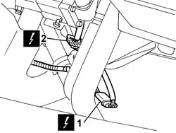
Applies to: engines: 1.2 8v; all production periods
Raise the vehicle.
Op. 1076B20 REAR EXHAUST SILENCER - R + R
1. Undo the nuts fixing the manifold/catalytic converter to the cylinder head.
2. Undo the bolt fixing the manifold/catalytic converter mounting bracket to the gearbox.
3. Lower the manifold/catalytic converter.
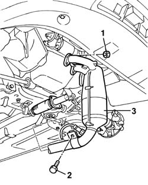
Applies to: engines: 1.2 8v; all production periods
1. Remove the bearings (1a) from the rubber mountings on the bodyshell, then remove the complete exhaust pipe (1b).
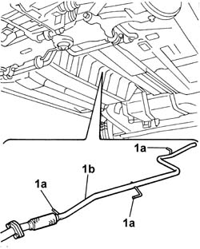
Applies to: engines: 1.2 8v; all production periods
Refitting
RemovingPosition the exhaust pipe and fit the bearings for the rigid pipe in the special rubber mountings.
Tighten the nut fixing the mounting bracket for the front section of the exhaust pipe to the gearbox to torque.
 | Fastening | Component | Ø | Value (daNm) |
|---|---|---|---|---|
- | Bolt | CATALYTIC CONVERTER (ONE) | M8 | (Collar at gearbox) 2.8 |
Tighten the nuts securing the exhaust manifold to the cylinder head to the recommended torque.
| Fastening | Component | Ø | Value (daNm) |
|---|---|---|---|---|
- | Nut | CATALYTIC CONVERTER (ONE) | M8 | (Manifold to cylinder head) 3 |
Op. 1076B20 REAR EXHAUST SILENCER - R + R
Lower the vehicle.
Connect the electrical connections for the two Lambda sensors.
| Name | Connector |
|---|---|---|
- | Lambda sensor |
| Name | Connector |
|---|---|---|
- | Lambda sensor - 2 |
Op. 7055B54 PROTECTION/GUARD UNDER ENGINE - R.R.
Op. 1072C44 EXHAUST MANIFOLD HEAT SHIELD R+R
Connect the battery negative terminal.
Remove the car from the lift.
Applies to: engines: 1.3 JTD 16V; all production periods
Removing
RefittingPosition the car on the ramp.
Carry out
Op. 7055B54 PROTECTION/GUARD UNDER ENGINE - R.R..
Carry out
Op. 1076B20 REAR EXHAUST SILENCER - R + R.
1. Undo the nut (1a) and release the collar securing the exhaust pipe to the catalyzer (1b).
2. Release the exhaust pipe from the rubber anchoring blocks and disconnect the pipe from the catalyzer.
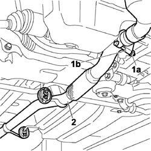
Applies to: engines: 1.3 JTD 16V; all production periods
1. Do not deform the front hose beyond an angle of X = 20 angle; and the cut Y = 25 mm.
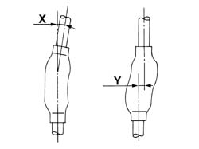
Applies to: engines: 1.3 JTD 16V; all production periods
1. Release the exhaust pipe from the rubber mounting blocks and remove it from the car.
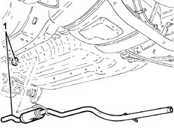
Applies to: engines: 1.3 JTD 16V; all production periods
Refitting
RemovingPosition the exhaust pipe in its seating and connect it to the rubber mounting blocks.
Connect the exhaust pipe to the catalyzer, taking care not to deform the flexible section.
Tighten the nut on the collar securing the pipe to the catalyzer.
Position the rubber blocks in the anchor points on the exhaust pipe.
Carry out
Op. 1076B20 REAR EXHAUST SILENCER - R + R.
Carry out
Op. 7055B54 PROTECTION/GUARD UNDER ENGINE - R.R..
Remove the car from the ramps.
Applies to: engines: 1.9 DIESEL; all production periods
Removing
RefittingPosition the vehicle on a lift.
Op. 1076B20 REAR EXHAUST SILENCER - R + R
Op. 7055B54 PROTECTION/GUARD UNDER ENGINE - R.R.
1. Undo the retaining bolts on the reinforcing bracket on the oil sump.
2. Remove the reinforcement bracket.
3. Undo the nuts securing the exhaust pipe to the manifold.
4. Undo the fixing bolt and release the rubber mounting, complete with bodyshell pin.
5. Lower the front section of the exhaust pipe.
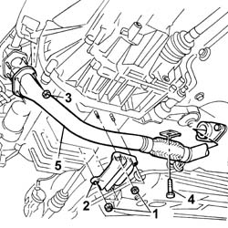
Applies to: engines: 1.9 DIESEL; all production periods
1. Remove pins (1a) fromrubber blocks (1b) on the bodyshell, then remove the exhaust pipe assembly.
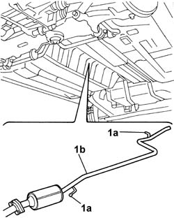
Applies to: engines: 1.9 DIESEL; all production periods
Refitting
RemovingPosition the exhaust pipe and fit the bearings for the rigid pipe in the special rubber mountings.
Fit the exhaust pipe gasket.
Fit the front section of the exhaust pipe.
Secure the pin to its rubber block.
Tighten the nuts securing the exhaust pipe to the manifold.
| Fastening | Component | Ø | Value (daNm) |
|---|---|---|---|---|
- | Nut | EXHAUST PIPE TO ENGINE | M8 | (Exhaust manifold) 3 |
Tighten the nuts securing the reinforcement brackets to the studs on the oil sump.
Op. 7055B54 PROTECTION/GUARD UNDER ENGINE - R.R.
Op. 1076B20 REAR EXHAUST SILENCER - R + R
Remove the car from the lift.
Applies to: engines: 1.9 JTD 8V; all production periods
Removing
RefittingPosition the vehicle on the ramp.
Proceed with the removal
Op. 1076B20 REAR EXHAUST SILENCER - R + R.
Proceed with the removal
Op. 7055B54 PROTECTION/GUARD UNDER ENGINE - R.R..
1. Undo the exhaust pipe mount retaining nuts.
2. Undo nuts (2a), (2b) and remove the exhaust pipe attachment to the engine (2c) complete with mount (2d) and flexible mount (2e).
3. Remove the gaskets.
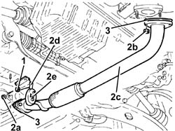
Applies to: engines: 1.9 JTD 8V; all production periods
1. Release the catalytic converter from the flexible mountings and remove.
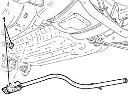
Applies to: engines: 1.9 JTD 8V; all production periods
Refitting
RemovingRefit the catalytic converter and connect to the flexible mounting blocks.
1. Refit the exhaust pipe attachment to the engine (1a) complete with gaskets and secure by tightening nuts (1b) and (1c) to the specified torque.
| Fastening | Component | Ø | Value (daNm) |
|---|---|---|---|---|
1b | Nut | EXHAUST PIPE TO ENGINE | M8 | (Catalytic converter side) 2.7 ÷ 3.3 |
| Fastening | Component | Ø | Value (daNm) |
|---|---|---|---|---|
1c | Nut | EXHAUST PIPE TO ENGINE | M8 | (Hose side) 2.7 ÷ 3.3 |
2. Tighten the nuts securing the exhaust pipe mount.
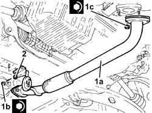
Applies to: engines: 1.9 JTD 8V; all production periods
Proceed with the refitting
Op. 7055B54 PROTECTION/GUARD UNDER ENGINE - R.R..
Proceed with the refitting
Op. 1076B20 REAR EXHAUST SILENCER - R + R.
Remove the car from the ramp.
Topics linked from this page (5)
- 1072C44 exhaust manifold heat shield on bulkhead - r+r
- 1076B20 rear exhaust silencer - r + r
- 7055B54 under-engine guard - r r
- K39 LAMBDA SENSOR - 2 ( ENGINE )
- K040 LAMBDA SENSOR